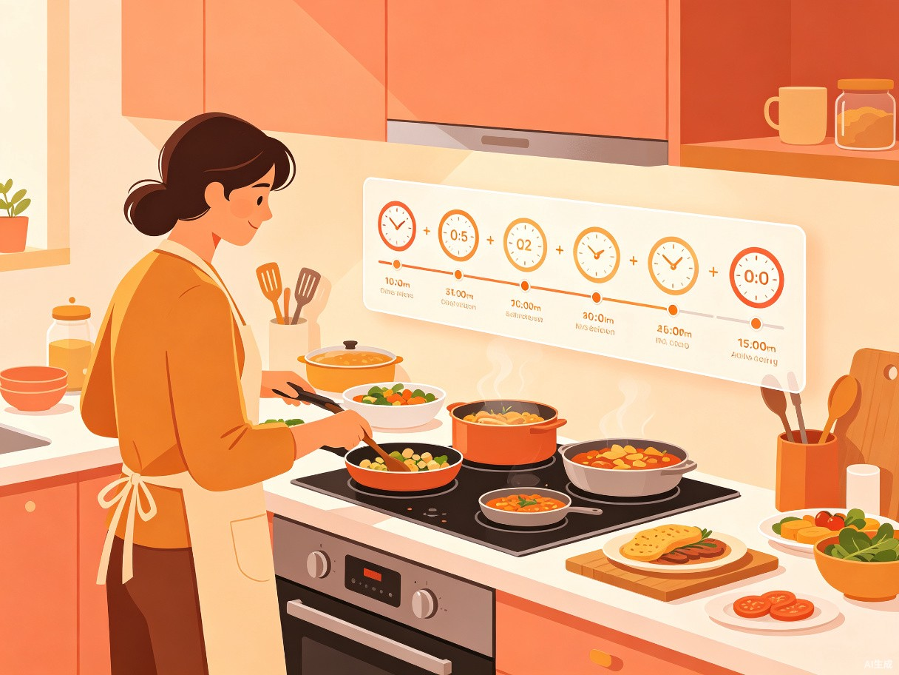
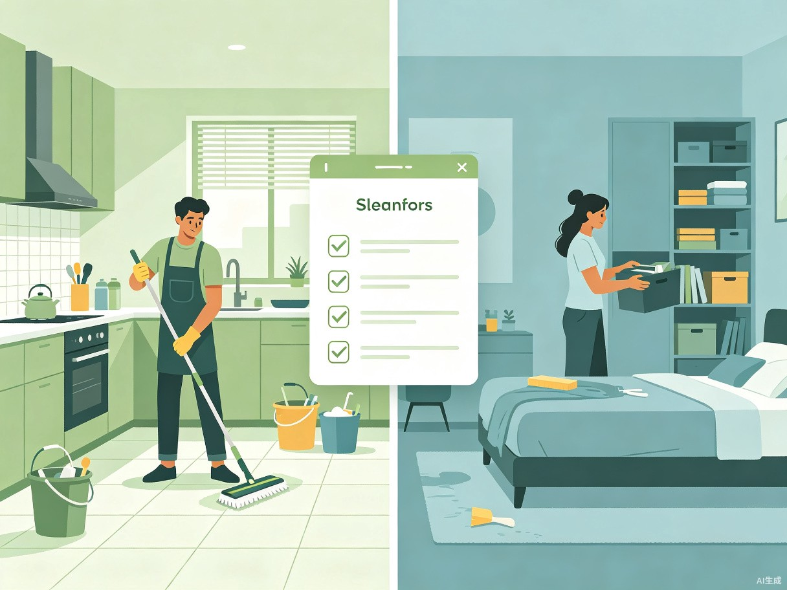
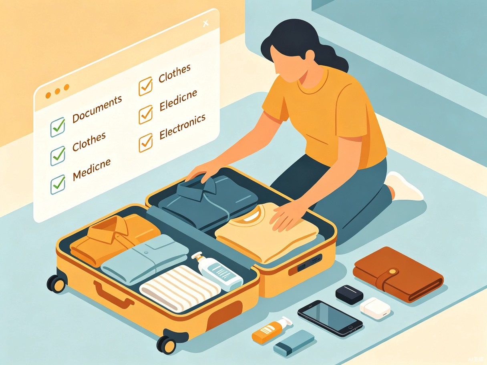
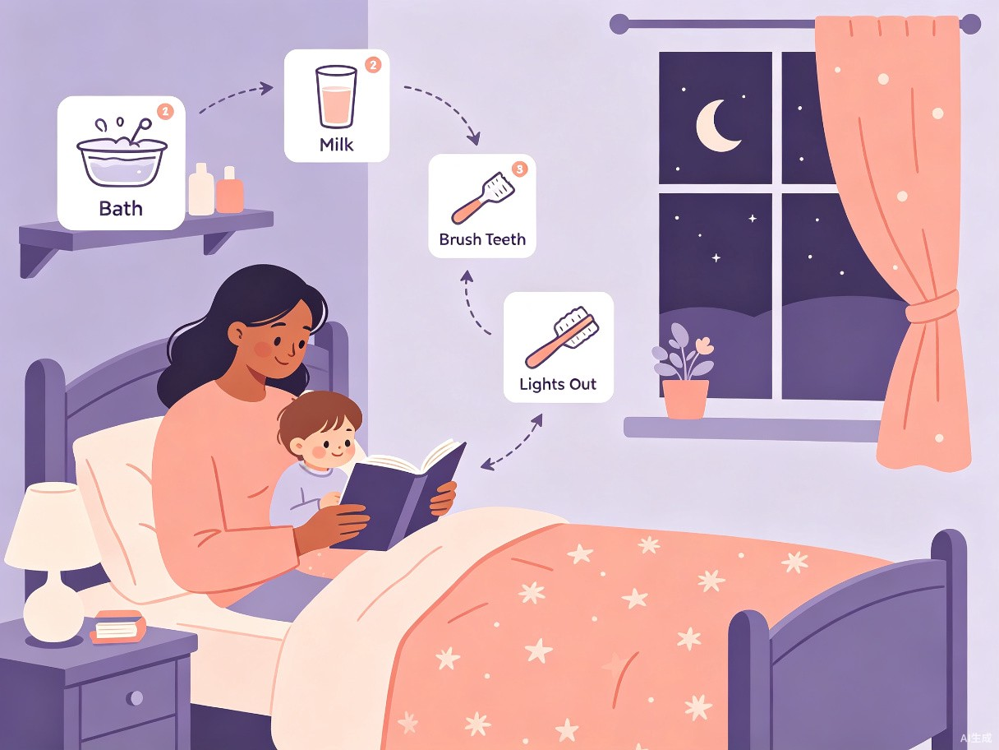

LifeFlow 是一个面向日常生活的 AI SOP 编排工具。它不是简单的待办清单，也不是只会回答问题的聊天助手，而是帮助用户把一件复杂生活任务拆解成可执行、可编辑、可推进的流程。
很多生活任务并不难，但真正执行时会变得混乱：做一顿四菜一汤、周末全屋清洁、出门旅行前收拾行李、孩子睡前流程、家庭聚会准备、老人照护安排。这些事情都有共同特点：步骤多、容易中断、需要考虑时间顺序、资源占用和多人协作。用户往往不是不知道要做什么，而是不知道"现在最应该做哪一步"。
LifeFlow 希望解决这个问题。用户只需要用自然语言描述目标，例如"今晚 7 点前准备四菜一汤""周末上午完成全屋清洁""明天带孩子出门露营，需要准备行李"。AI 会根据任务目标主动追问关键约束，例如时间、人数、工具、资源、优先级和当前进度，然后自动生成一份生活 SOP。用户可以编辑流程，确认后进入执行模式，由系统一步一步提醒下一步该做什么。
核心场景

1家庭晚餐编排
一位妈妈想为家人准备四菜一汤。没有工具时，她可能一边洗菜、一边烧水、一边想着孩子的事情，很容易忘记提前炖汤、忘记蒸鱼时间，或者太早炒好青菜导致变凉。最后虽然完成了晚餐，但过程手忙脚乱，耗时更长，体验也更累。
使用 LifeFlow 后，AI 会编排出更合理的执行顺序，例如先处理需要长时间等待的汤，再安排腌鱼、切配、蒸鱼和最后快炒青菜。进入执行模式后，用户可以手动点击"下一步"，也可以说出提示词让系统语音播报下一步操作。

2周末全屋清洁
用户输入"我周六上午想完成客厅、厨房、卫生间和卧室清洁，家里两个人，洗衣机可以同时工作"。LifeFlow 会把任务拆成可并行流程，例如先启动洗衣机，再处理需要浸泡的厨房油污，同时安排另一个人清理卧室或整理垃圾，避免大家重复劳动或等待。

3旅行前行李准备
用户输入目的地、人数、天数和出发时间后，LifeFlow 可以生成行李准备 SOP，按照证件、衣物、药品、电子设备、儿童用品等维度安排检查流程，并在执行时逐项确认，降低遗漏风险。

4亲子睡前流程
用户可以把"洗澡、喝奶、刷牙、绘本、关灯、安抚入睡"编排成固定流程。系统在每晚执行时提醒下一步，也可以根据当天情况调整，例如"今天孩子已经洗过澡了"，AI 会重新安排剩余步骤。
产品形态
初版产品计划采用 PWA 形式。PWA 可以直接在手机浏览器中使用，也可以添加到桌面，适合生活场景下快速打开；同时它可以承载语音识别、语音播报、计时器、离线缓存和本地数据保存，开发成本比原生 App 更低，也比小程序更适合快速展示完整 Demo。
产品首页会突出"生活任务编排"这个大方向，而不是把产品限制成厨房工具。用户可以从几个生活模板开始，也可以直接输入任意生活目标：
核心功能
自然语言输入
用户不用学习复杂表单，只需要描述自己要完成的事情。
AI 主动追问
系统根据任务类型追问必要条件：人数、时间、工具、地点、资源等。
自动生成可编辑 SOP
AI 输出步骤列表、时间安排、依赖关系和注意事项，用户可自由修改。
时间轴编排
展示哪些事情可以同时做，哪些必须等待，帮助理解并行与依赖。
执行模式
进入后只关注当前步骤、计时器和紧急提醒，减少信息干扰。
语音播报与声控推进
说出提示词触发下一步提示，系统语音播报当前最应该做的动作。
中断恢复
告诉系统"我忘记开火了"或"暂停 10 分钟"，AI 会重新编排剩余流程。
用户自带 API Key
支持填写自己的 API Key，兼容 OpenAI 接口，仅保存在本地浏览器中。
Demo 计划
初赛 Demo 会重点展示"对生活的编排"完整流程：
Demo 中会内置多个生活模板，其中"四菜一汤"作为重点样例，用来展示多任务并行、资源占用和时间编排能力；同时保留全屋清洁、旅行行李、亲子睡前、家庭聚会等模板，体现 LifeFlow 不是单点工具，而是可扩展的生活 SOP 引擎。
创新点
LifeFlow 的重点不是"生成一个清单"，而是"把生活任务变成可执行流程"。传统待办工具只告诉用户有哪些事情要做，AI 聊天工具通常只给出建议，但 LifeFlow 更关注执行阶段：什么时候做、先做什么、哪些可以并行、被打断后如何继续、当前最重要的下一步是什么。
它把项目管理里的 SOP、依赖关系、资源编排和时间轴，转化为普通人也能直接使用的生活工具。对于厨房、家务、育儿、旅行、照护等场景，LifeFlow 可以让复杂任务变得更有秩序，也让用户在执行过程中少记一点、少慌一点、少漏一点。
未来扩展
家庭成员协作，把步骤分配给不同的人
常用 SOP 模板库，支持复用和分享
执行后复盘，记录实际耗时并优化下次流程
接入智能音箱、手表或耳机，提升免手操作体验
结合家庭设备状态，如洗衣机、烤箱、智能灯具
为老人照护、亲子陪伴、家庭健康管理提供流程支持